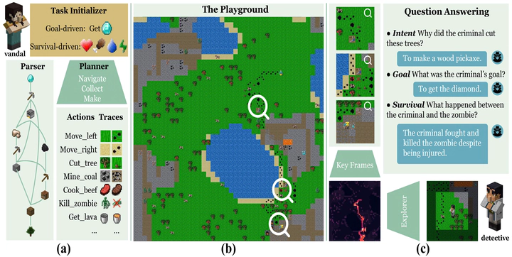
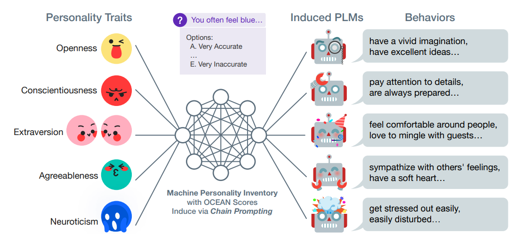
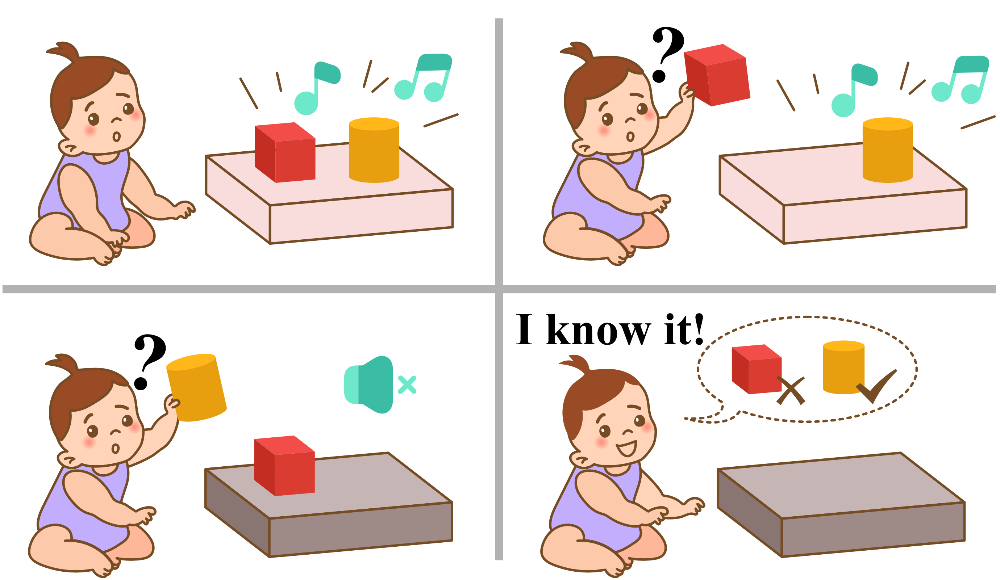
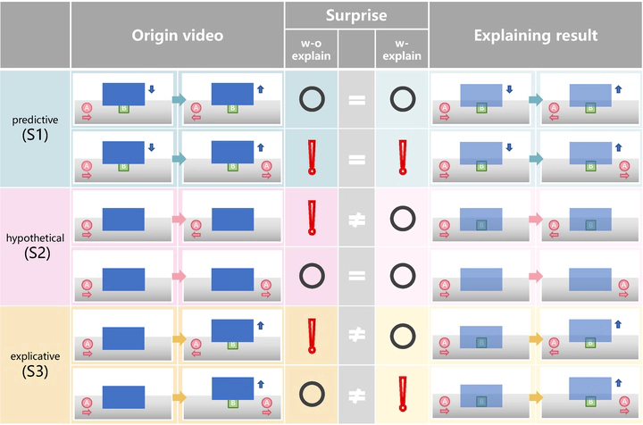
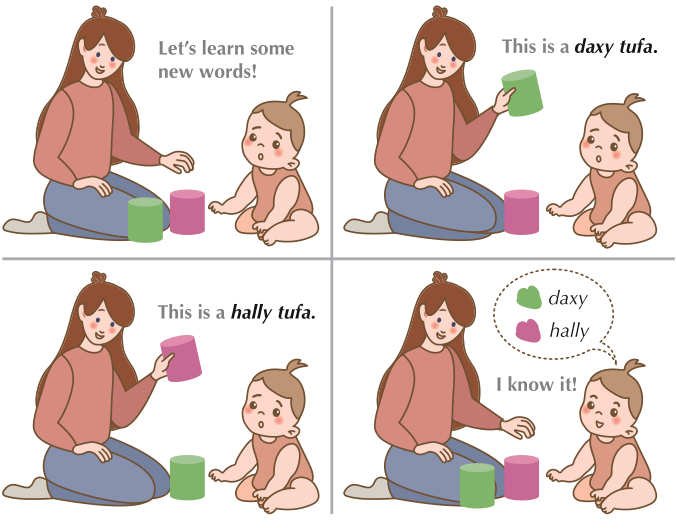
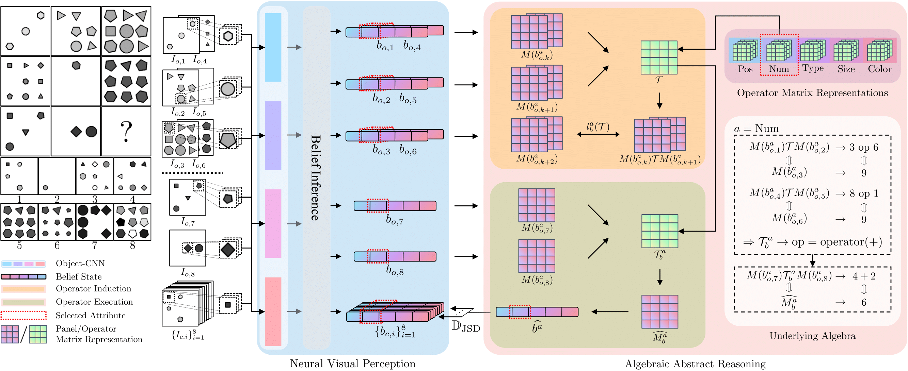
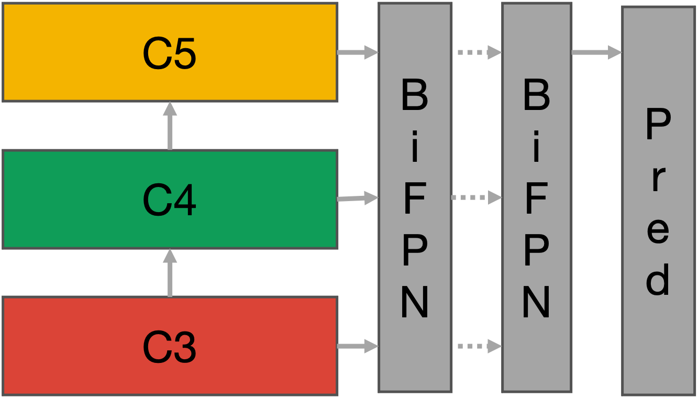

-

NarrativeLoom: Enhancing Creative Storytelling through Multi-Persona Collaborative Improvisation
Yuxi Ma, Yongqian Peng, Fengyuan Yang, Siyu Zha, Chi Zhang, Zixia Jia, Zilong Zheng, Yixin Zhu
CHI 2026
-

Learning physics-grounded 4D dynamics with neural gaussian force fields
Shiqian Li, Ruihong Shen, Junfeng Ni, Chang Pan, Chi Zhang, Yixin Zhu
ICLR 2026
-

Neural Force Field: Few-shot Learning of Generalized Physical Reasoning
Shiqian Li, Ruihong Shen, Yaoyu Tao, Chi Zhang, Yixin Zhu
ICLR 2026
-

Proposing and solving olympiad geometry with guided tree search
Chi Zhang, Jiajun Song, Siyu Li, Yitao Liang, Yuxi Ma, Wei Wang, Yixin Zhu, Song-Chun Zhu
Nature Machine Intelligence, Jan Issue, 2026
-

Heterogeneous Adversarial Play in Interactive Environments
Manjie Xu, Xinyi Yang, Jiayu Zhan, Wei Liang, Chi Zhang, Yixin Zhu
NeurIPS 2025
-

Seed-Prover: Deep and Broad Reasoning for Automated Theorem Proving
ByteDance Seed AI4Math
Tech report, July, 2025
-

Probing and inducing combinational creativity in vision-language models
Yongqian Peng, Yuxi Ma, Mengmeng Wang, Yuxuan Wang, Yizhou Wang, Chi Zhang, Yixin Zhu, Zilong Zheng
CogSci 2025
-

A simulation-heuristics dual-process model for intuitive physics
Shiqian Li, Yuxi Ma, Jiajun Yan, Bo Dai, Yujia Peng, Chi Zhang, Yixin Zhu
CogSci 2025
-
Human-level few-shot concept induction through minimax entropy learning
Chi Zhang, Baoxiong Jia, Yixin Zhu, Song-Chun Zhu
Science Advances, Vol 10, Issue 16, 2024
-

I-PHYRE: Interactive Physical Reasoning
Shiqian Li, Kewen Wu, Chi Zhang,Yixin Zhu
ICLR 2024
-

Active Reasoning in an Open-World Environment
Manjie Xu, Guangyuan Jiang, Wei Liang, Chi Zhang,
Yixin Zhu
NeurIPS 2023
-

Evaluating and Inducing Personality in Pre-trained Language Models
Guangyuan Jiang
*, Manjie
Xu
*, Song-Chun Zhu, Wenjuan Han,
Chi Zhang,
Yixin Zhu
NeurIPS 2023
Spotlight
-

Interactive Visual Reasoning under Uncertainty
Manjie Xu
*, Guangyuan
Jiang
*, Wei Liang,
Chi
Zhang,
Yixin Zhu
NeurIPS 2023 Datasets and Benchmarks
-

X-VoE: Measuring eXplanatory Violation of Expectation in Physical Events
Bo Dai, Linge Wang, Baoxiong Jia, Zeyu Zhang, Song-Chun Zhu, Chi Zhang,
Yixin Zhu
ICCV 2023
Oral
-

MEWL: Few-shot multimodal word learning with referential uncertainty
Guangyuan Jiang, Xanjie Xu, Shiji Xin, Wei Liang, Yujia Peng, Chi Zhang,
Yixin Zhu
ICML 2023
-

On the Learning Mechanisms in Physical Reasoning
Shiqian Li
*, Kewen Wu
*,
Chi Zhang,
Yixin Zhu
NeurIPS 2022
Spotlight
-

Learning Algebraic Representation for Systematic Generalization in Abstract Reasoning
Chi Zhang*, Sirui Xie
*, Baoxiong Jia
*, Ying Nian Wu, Song-Chun Zhu, Yixin Zhu
ECCV 2022
-

DETR++: Taming Your Multi-Scale Detection Transformer
Chi Zhang, Lijuan Liu, Xiaoxue Zang, Frederick Liu, Hao Zhang, Xinying
Song, Jindong Chen
T4V: Transformers for Vision @ CVPR 2022.
-

ACRE: Abstract Causal REasoning Beyond Covariation
Chi Zhang, Baoxiong Jia, Mark Edmonds, Song-Chun Zhu, Yixin Zhu
CVPR 2021
-

Abstract Spatial-Temporal Reasoning via Probabilistic Abduction and Execution
Chi Zhang*, Baoxiong Jia
*, Song-Chun Zhu, Yixin Zhu
CVPR 2021
-

Congestion-aware Multi-agent Trajectory Prediction for Collision Avoidance
Xu Xie, Chi Zhang, Yixin Zhu, Ying Nian Wu, Song-Chun Zhu
ICRA 2021
-

Dark, Beyond Deep: A Paradigm Shift to Cognitive AI with Humanlike Common Sense
Yixin Zhu, Tao Gao, Lifeng Fan, Siyuan Huang, Mark Edmonds, Hangxin Liu, Feng Gao,
Chi Zhang, Siyuan Qi, Ying Nian Wu, Joshua B. Tenenbaum, Song-Chun Zhu
Engineering, Volume 6, Issue 3
-

Machine Number Sense: A Dataset of Visual Arithmetic Problems for Abstract and Relational
Reasoning
Wenhe Zhang, Chi Zhang, Yixin Zhu, Song-Chun Zhu
AAAI 2020
Oral
-

Learning Perceptual Inference by Contrasting
Chi Zhang*, Baoxiong Jia
*, Feng Gao, Yixin Zhu, Hongjing Lu, Song-Chun Zhu
NeurIPS 2019
Spotlight (2.43% acceptance rate)
-

Learning Virtual Grasp with Failed Demonstrations via Bayesian Inverse Reinforcement Learning
Xu Xie
*, Changyang Li
*,
Chi Zhang, Yixin Zhu,
Song-Chun Zhu
IROS 2019
-

RAVEN: A Dataset for Relational and Analogical Visual
rEasoNing
Chi Zhang*, Feng Gao
*, Baoxiong Jia, Yixin Zhu, Song-Chun Zhu
CVPR 2019
-

MetaStyle: Three-Way Trade-Off Among Speed, Flexibility, and Quality in Neural Style Transfer
Chi Zhang, Yixin Zhu, Song-Chun Zhu
AAAI 2019
-

Mirroring without Overimitation: Learning Functionally Equivalent Manipulation Actions
Hangxin Liu, Chi Zhang, Yixin Zhu, Chenfanfu Jiang, Song-Chun Zhu
AAAI 2019
-

Learning Unmanned Aerial Vehicle Control for Autonomous Target Following
Siyi Li, Tianbo Liu, Chi Zhang, Dit-Yan Yeung, Shaojie Shen
IJCAI 2018
-

Question Retrieval for Community-based Question Answering via Heterogeneous Social
Influential Network
Zheqian Chen, Chi Zhang, Zhou Zhao, Chengwei Yao, Deng Cai
Neurocomputing, Volume 285
-

A Method of Exact 3D Modeling Based on Natural Gestures via Data Gloves (in Chinese)
Xiangdong Li, Sihong Lv, Yikun Wang, Xiaowo Sun, Chi Zhang
Patent publication number: CN104778746 B